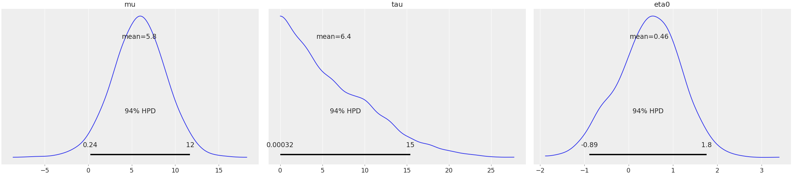
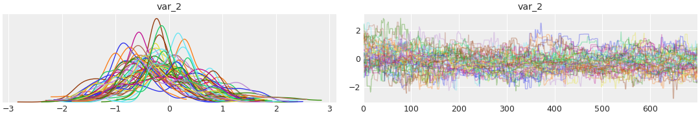
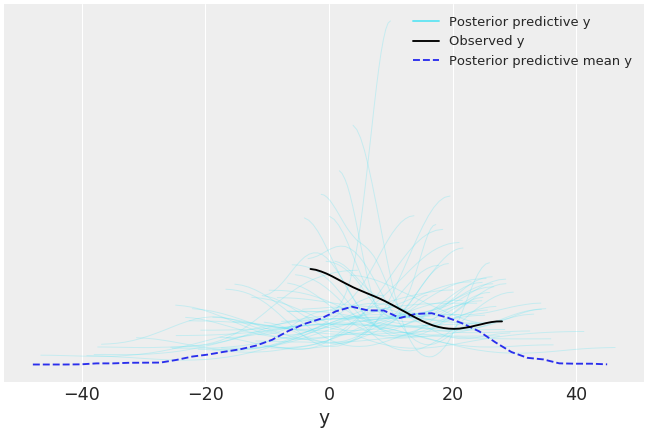

arviz.from_emcee¶
-
arviz.from_emcee(sampler=None, var_names=None, slices=None, arg_names=None, arg_groups=None, blob_names=None, blob_groups=None, coords=None, dims=None)[source]¶ Convert emcee data into an InferenceData object.
- Parameters
- sampleremcee.EnsembleSampler
Fitted sampler from emcee.
- var_nameslist[str] (Optional)
A list of names for variables in the sampler
- sliceslist[array-like] (Optional)
A list containing the indexes of each variable. Should only be used for multidimensional variables.
- arg_nameslist[str] (Optional)
A list of names for args in the sampler
- arg_groupslist of str, optional
A list of the group names (either
observed_dataorconstant_data) where args in the sampler are stored. If None, all args will be stored in observed data group.- blob_nameslist[str] (Optional)
A list of names for blobs in the sampler. When None, blobs are omitted, independently of them being present in the sampler or not.
- blob_groupslist[str] (Optional)
A list of the groups where blob_names variables should be assigned respectively. If blob_names!=None and blob_groups is None, all variables are assigned to sample_stats group
- coordsdict[str] -> list[str] (Optional)
Map of dimensions to coordinates
- dimsdict[str] -> list[str] (Optional)
Map variable names to their coordinates
- Returns
- InferenceData
Examples
Passing an
emcee.EnsembleSamplerobject toaz.from_emceeconverts it to an InferenceData object. Start defining the model and running the sampler:>>> import emcee >>> import numpy as np >>> import arviz as az >>> J = 8 >>> y_obs = np.array([28.0, 8.0, -3.0, 7.0, -1.0, 1.0, 18.0, 12.0]) >>> sigma = np.array([15.0, 10.0, 16.0, 11.0, 9.0, 11.0, 10.0, 18.0]) >>> def log_prior_8school(theta): >>> mu, tau, eta = theta[0], theta[1], theta[2:] >>> # Half-cauchy prior, hwhm=25 >>> if tau < 0: >>> return -np.inf >>> prior_tau = -np.log(tau ** 2 + 25 ** 2) >>> prior_mu = -(mu / 10) ** 2 # normal prior, loc=0, scale=10 >>> prior_eta = -np.sum(eta ** 2) # normal prior, loc=0, scale=1 >>> return prior_mu + prior_tau + prior_eta >>> def log_likelihood_8school(theta, y, s): >>> mu, tau, eta = theta[0], theta[1], theta[2:] >>> return -((mu + tau * eta - y) / s) ** 2 >>> def lnprob_8school(theta, y, s): >>> prior = log_prior_8school(theta) >>> like_vect = log_likelihood_8school(theta, y, s) >>> like = np.sum(like_vect) >>> return like + prior >>> nwalkers, draws = 50, 700 >>> ndim = J + 2 >>> pos = np.random.normal(size=(nwalkers, ndim)) >>> pos[:, 1] = np.absolute(pos[:, 1]) >>> sampler = emcee.EnsembleSampler( >>> nwalkers, >>> ndim, >>> lnprob_8school, >>> args=(y_obs, sigma) >>> ) >>> sampler.run_mcmc(pos, draws);
And convert the sampler to an InferenceData object. As emcee does not store variable names, they must be passed to the converter in order to have them. It can also be useful to perform a burn in cut to the MCMC samples (see
arviz.InferenceData.sel()for more details):>>> var_names = ['mu', 'tau']+['eta{}'.format(i) for i in range(J)] >>> emcee_data = az.from_emcee(sampler, var_names=var_names).sel(draw=slice(100, None))
From an InferenceData object, ArviZ’s native data structure, the posterior plot of the first 3 variables can be done in one line:
>>> az.plot_posterior(emcee_data, var_names=var_names[:3])
This way of calling
from_emceestores each eta as a different variable, called etai, however, they are in fact different dimensions of the same variable. This can be seen in the likelihood and prior functions:mu, tau, eta = theta[0], theta[1], theta[2:]. ArviZ has support for multidimensional variables, and there is a way to tell it how to split the variables like it was done in the likelihood and prior functions:>>> emcee_data = az.from_emcee(sampler, slices=[0, 1, slice(2, None)])
After checking the default variable names, the trace of one dimension of eta can be plotted using ArviZ syntax:
>>> az.plot_trace(emcee_data, var_names=["var_2"], coords={"var_2_dim_0": 4})
Emcee does not store per-draw sample stats, however, it has a functionality called blobs that allows to store any variable on a per-draw basis. It can be used to store some sample_stats or even posterior_predictive data. The first step is to modify the probability function to use the
blobsand store the log_likelihood, then rerun the sampler using the new function:>>> def lnprob_8school_blobs(theta, y, s): >>> prior = log_prior_8school(theta) >>> like_vect = log_likelihood_8school(theta, y, s) >>> like = np.sum(like_vect) >>> return like + prior, like_vect >>> sampler_blobs = emcee.EnsembleSampler( >>> nwalkers, >>> ndim, >>> lnprob_8school_blobs, >>> args=(y_obs, sigma) >>> ) >>> sampler_blobs.run_mcmc(pos, draws);
Here, the argument blob_names is added with respect to the previous examples. As the group is not specified, it will go to sample_stats.
>>> dims = {"eta": ["school"], "log_likelihood": ["school"]} >>> data = az.from_emcee( >>> sampler_blobs, >>> var_names = ["mu", "tau", "eta"], >>> slices=[0, 1, slice(2,None)], >>> blob_names=["log_likelihood"], >>> dims=dims, >>> coords={"school": range(8)} >>> )
Or in the case of even more complicated blobs, each corresponding to a different group of the InferenceData object:
>>> def lnprob_8school_blobs(theta, y, sigma): >>> mu, tau, eta = theta[0], theta[1], theta[2:] >>> prior = log_prior_8school(theta) >>> like_vect = log_likelihood_8school(theta, y, sigma) >>> like = np.sum(like_vect) >>> return like + prior, (like_vect, np.random.normal((mu + tau * eta), sigma)) >>> sampler_blobs = emcee.EnsembleSampler( >>> nwalkers, >>> ndim, >>> lnprob_8school_blobs, >>> args=(y_obs, sigma), >>> ) >>> sampler_blobs.run_mcmc(pos, draws); >>> dims = {"eta": ["school"], "log_likelihood": ["school"], "y": ["school"]} >>> data = az.from_emcee( >>> sampler_blobs, >>> var_names = ["mu", "tau", "eta"], >>> slices=[0, 1, slice(2,None)], >>> arg_names=["y","sigma"], >>> blob_names=["log_likelihood", "y"], >>> blob_groups=["sample_stats", "posterior_predictive"], >>> dims=dims, >>> coords={"school": range(8)} >>> )
This last version, which contains both observed data and posterior predictive can be used to plot posterior predictive checks:
>>> az.plot_ppc(data, var_names=["y"], alpha=0.3, num_pp_samples=50)
